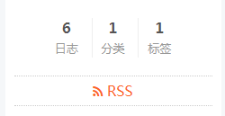
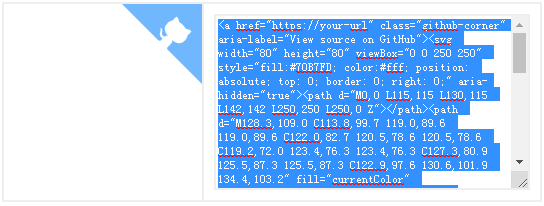
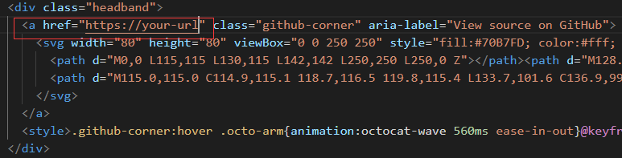
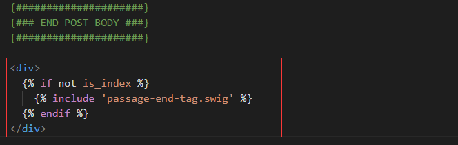

添加添加RSS
在博客根目录下，打开命令窗口，并安装Hexo插件
1 | npm install --save hexo-generator-feed |
安装成功之后，编辑Blog/_config.yml文件，在文件末尾添加
1 | # Extensions |
配置主题_config.yml文件，command+f搜索rss，在后面加上/atom.xml
1 | # Set rss to false to disable feed link. |
之后，终端输入hexo s查看效果

右上角添加GitHub挂件
在GitHub Corners选择一款你喜欢的挂饰，拷贝方框内的代码

在目录中找到Blog/themes/next/layout/_layout.swig文件并打开，将刚刚复制的挂饰代码添加在<div class="headband"></div>中

找到刚复制进去代码的<a></a>标签，将跳转地址改成自己的GitHub地址
修改底部标签样式
修改Blog\themes\next\layout\_macro\post.swig中文件，command+f搜索rel="tag">#，将#替换成<i class="fa fa-tag"></i>
输入以下命令，查看效果
1 | hexo clean |
在文章末尾添加“文章结束”标记
在路径Blog\themes\next\layout\_macro文件夹中新建passage-end-tag.swig文件
1 | //切换到路径_macro |
在passage-end-tag.swig添加以下内容，直接用文本编辑器打开，粘贴以下内容后保存
1 | <div> |
打开Blog\themes\next\layout\_macro\post.swig，在post-body之后，post-footer之前（post-footer之前两个DIV），添加以下代码：
1 | <div> |
位置如下：

修改主题配置文件_config.yml，在末尾添加：
1 | # 文章末尾添加“本文结束”标记 |
配置完成之后，效果如下：